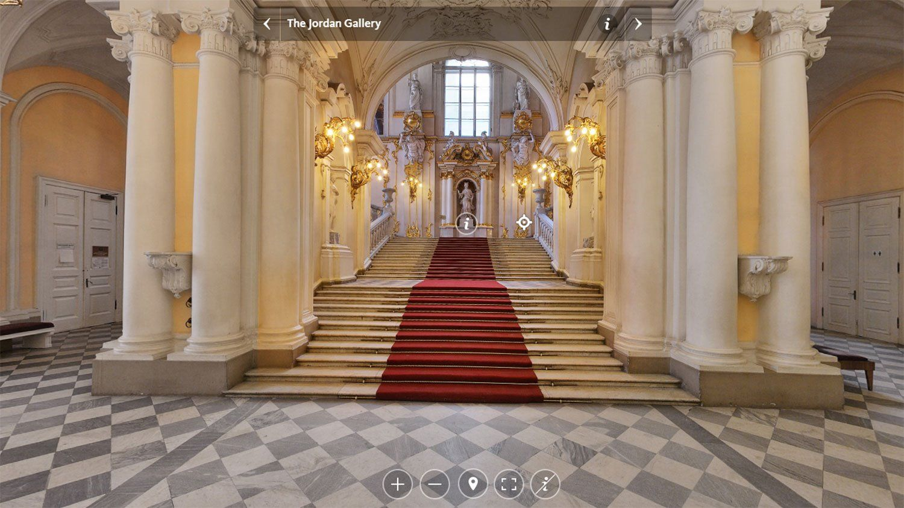
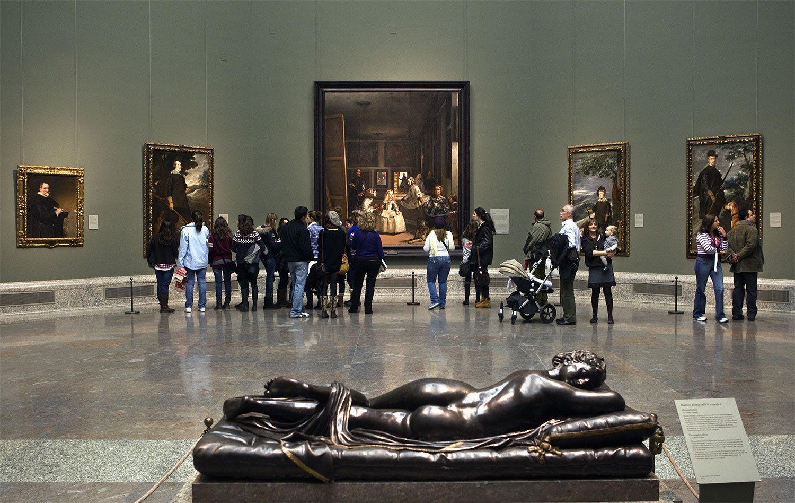
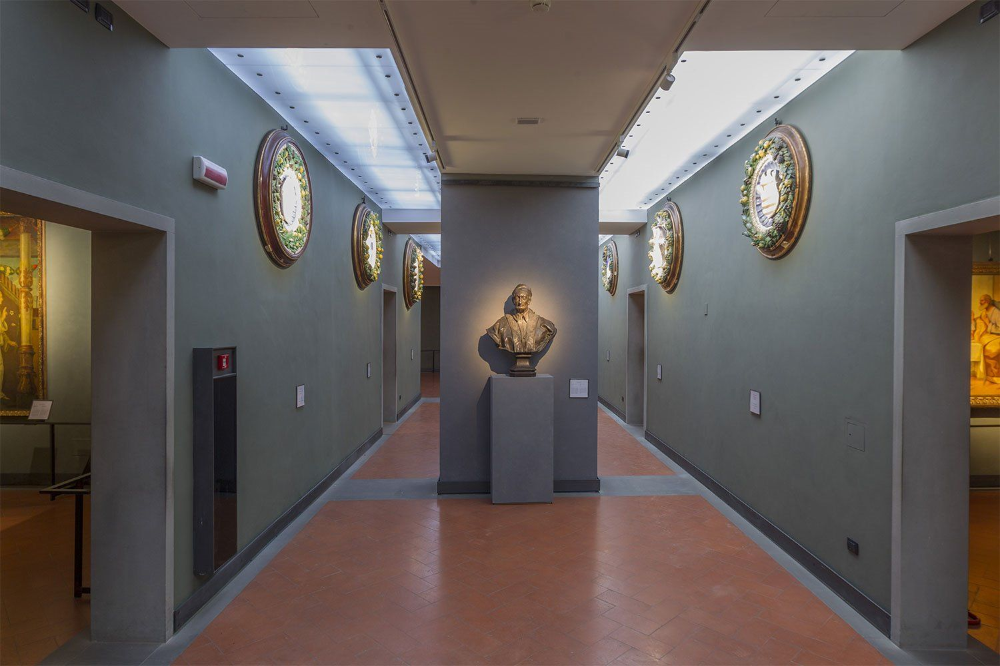
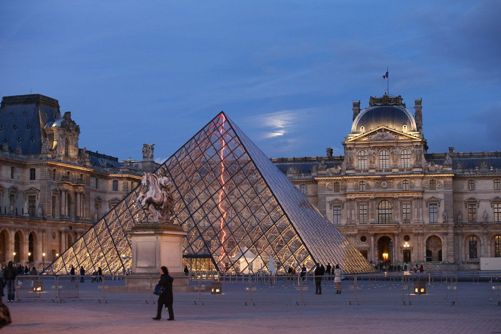
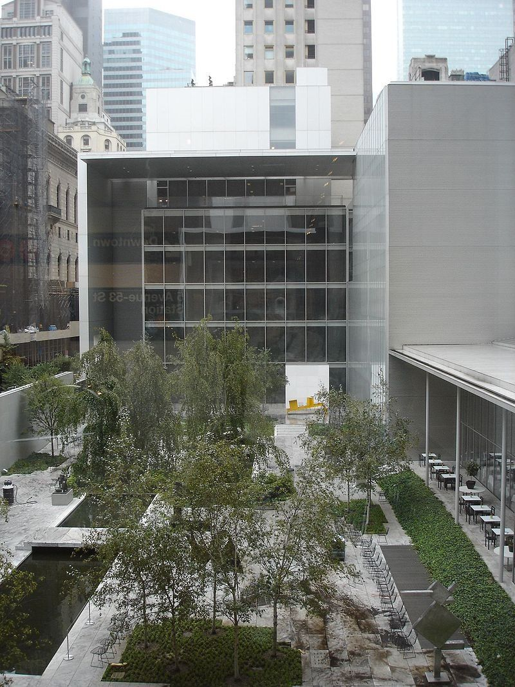
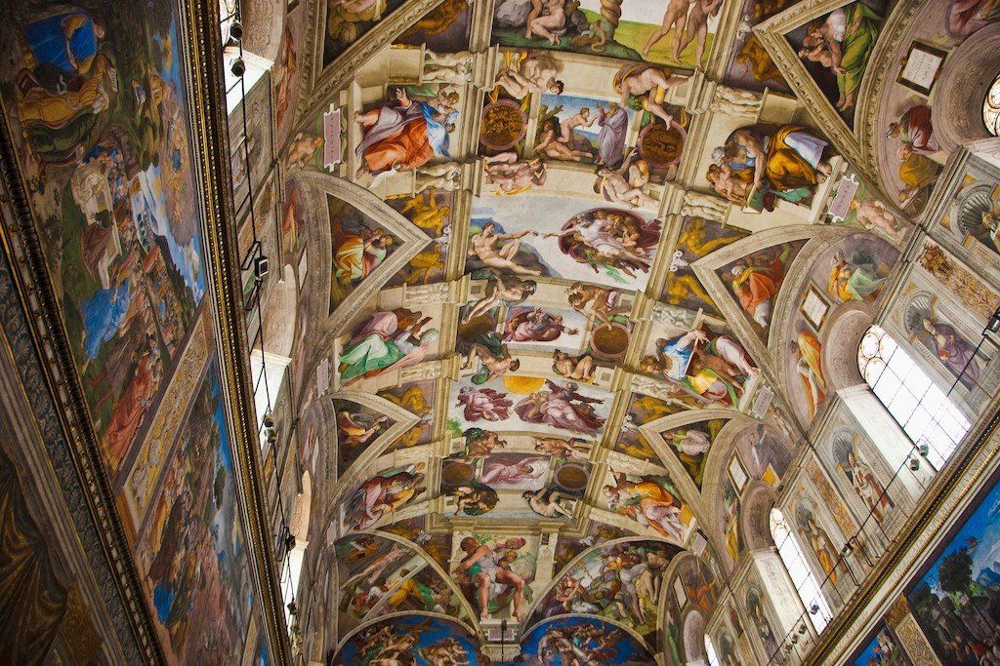
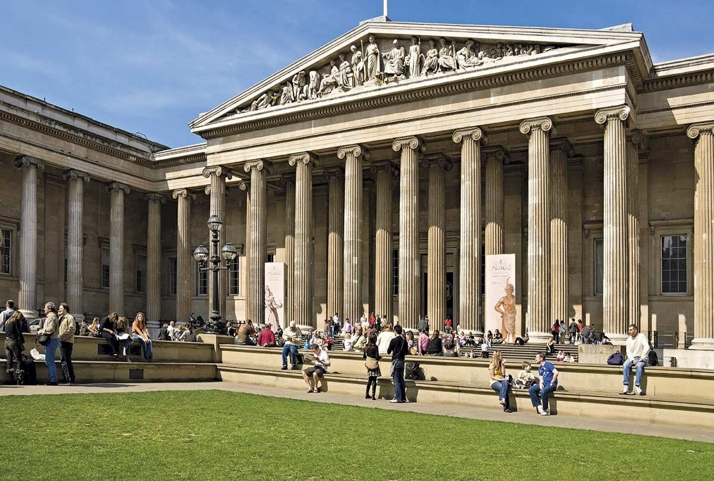
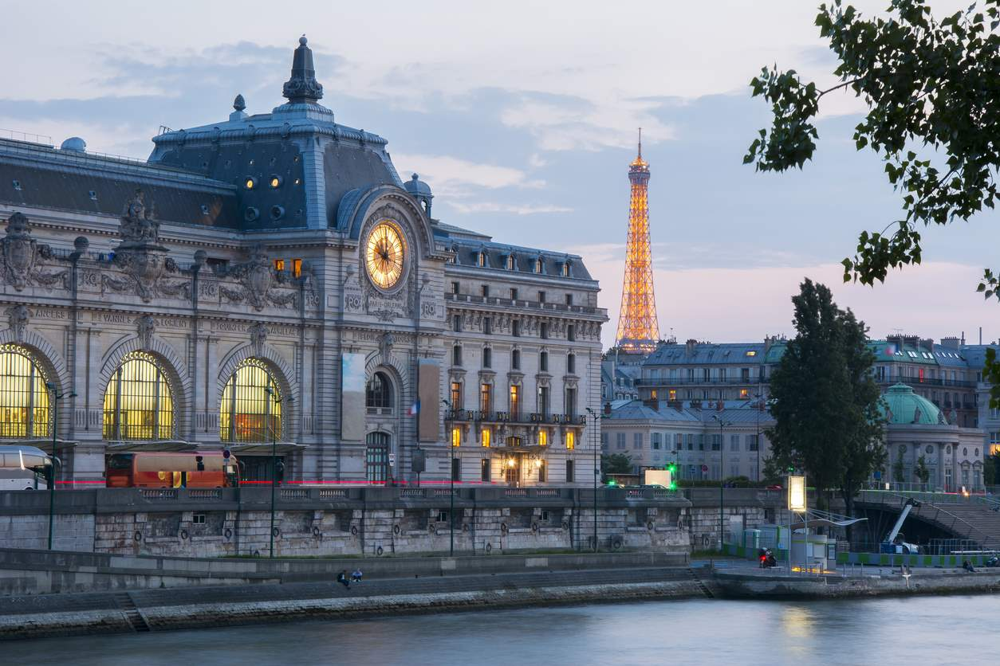
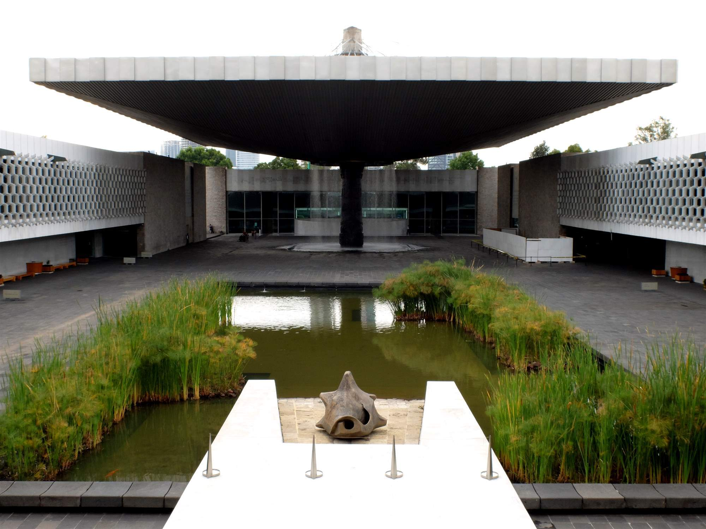

Museo Hermitage
Con más de tres millones de piezas, este museo de San
Petersburgo es el más importante de Rusia y uno de los
más completos del mundo en cuanto a antigüedades se
refiere, sobre todo procedentes de las culturas griega y
romana.
Ver web
>

Museo del Prado
La que probablemente es la mejor pinacoteca del mundo,
celebró en 2019 su 200 aniversario. Abrió sus puertas el
19 de noviembre de 1819 con apenas 311 obras de la
Colección Real.
Ver web
>

Galería Uffizi
En Florencia, la Galería Uffizi contiene la colección de
obras de arte adquiridas por la familia Medici hasta el
siglo XVIII. En ella se puede ver El nacimiento de Venus
de Sandro Botticelli, La Anunciación de Leonardo da
Vinci o la Venus de Urbino de Tiziano.
Ver web
>

Museo del Louvre
Con obras dedicadas al impresionismo, a las bellas
artes, a la arqueología y a las artes decorativas, sin
duda, la obra estrella del Museo del Louvre es la Mona
Lisa o Gioconda de Leonardo da Vinci.
Ver web
>

Museo de Arte Moderno de Nueva York (MOMA)
El Museo de Arte Moderno de Nueva York (Museum of Modern
Art, MoMa), cuenta con una de las mejores colecciones de
arte moderno y contemporáneo (entre finales del siglo
XIX y XX) del mundo.
Ver web
>

Museos Vaticanos
Propiedad de la Iglesia Católica y situados en Ciudad de
Vaticano, los Museos Vaticanos están formados por
museos, jardines y villas pontificias.
Ver web
>

British Museum
Este museo de Londres cuenta con una de las colecciones
más grandes e importantes del mundo. Con más de ocho
millones de piezas sobre historia, arqueología,
etnografía y arte, fue el primer museo nacional del
mundo creado en 1753. Hoy, su colección puede verse a
golpe de clic gracias a la colaboración de esta entidad
con Google.
Ver web
>

Museo d'Orsay
Esta pinacoteca parisina conocida por su rica colección
de arte impresionista, alberga la creación de los
artistas que vivieron y trabajaron en Francia entre 1848
y 1914. Así, obras de Monet, Cézanne o Gauguin pueden
verse en las salas de esta antigua estación con aspecto
de palacio, inaugurada para la exposición universal de
1900.
Ver web
>

Museo Nacional de Antropología de México
Al otro lado del charco, el museo de aqueología e
historia de México también colabora con la herramienta
de Street View. Coantruido en 1964, cuenta con 23 salas
que exhiben el legado arqueológico de los pueblos de
Mesoamérica, tales como los de la civilización maya, con
el objetivo de mostrar la diversidad cultural del país.
Ver web
>